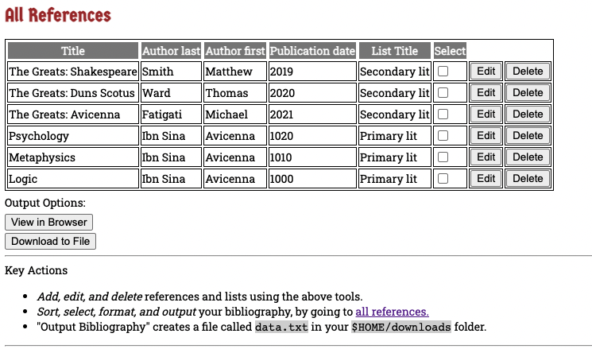
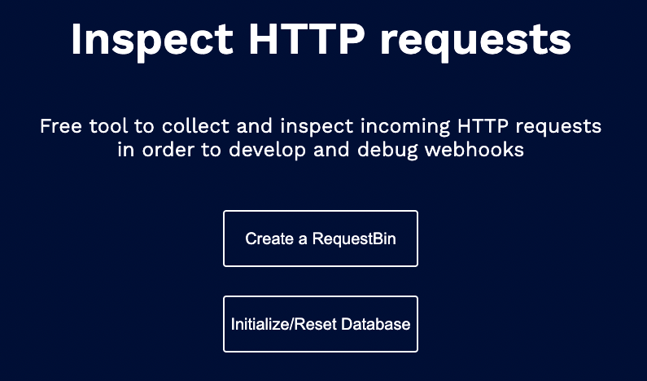

Michael Fatigati
I'm a full stack software engineer based in Austin, Texas. Recently I built Sentinel, an open source platform as a service (PaaS), with built in support for upgrading applications via canary deployments.
I have multiple years of experience in the JavaScript/Node.js and Go ecosystems, and I'm comfortable working with AWS infrastructure, Docker swarm mode, PostgreSQL, Prometheus, and more.
I also have a PhD in Classical Arabic philosophy, and my passion for investigating questions and mastering languages has found a happy home in software.
Sentinel
Sentinel is an open source, cloud-agnostic, self-hosted platform as a service (PaaS) that can easily deploy multiple database-backed web applications, with built in support for upgrading applications via canary deployments.


Sentinel provides a straightforward CLI, and uses Terraform and Ansible to provision and configure cloud infrastructure, Docker in Swarm Mode for container orchestration, and Traefik for canary traffic-splitting and sticky-sessions.
Every application deployed via Sentinel is automatically integrated with a monitoring stack consisting of Node-Exporter, Prometheus, and Grafana.

Other projects
-

Reference Manager
Organize references for research papers and generate bibliographies to text files (Go's net/http and html/template libraries, PostgresSQL)
. -

Hookie
Develop, receive & debug webhooks (TypeScript, Pug, PostgresSQL, MongoDB)
-

Mello
A collaboration and project organization app based on Trello (Express, React/Redux, MongoDB)
-

Task Manager
Allows authenticated users to manage their todo lists (Express, JQuery, Handlebars, SQLite)